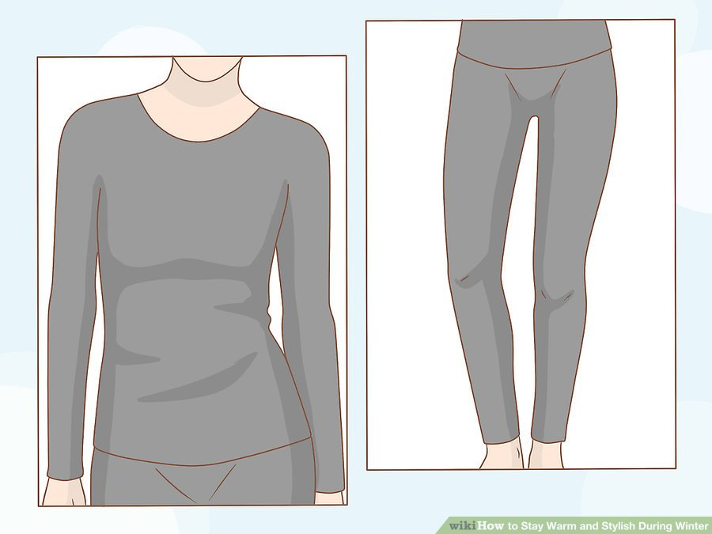
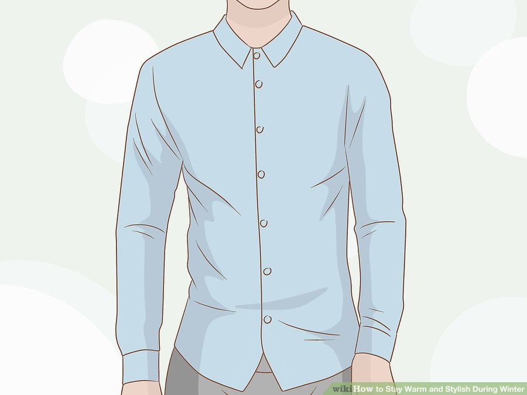
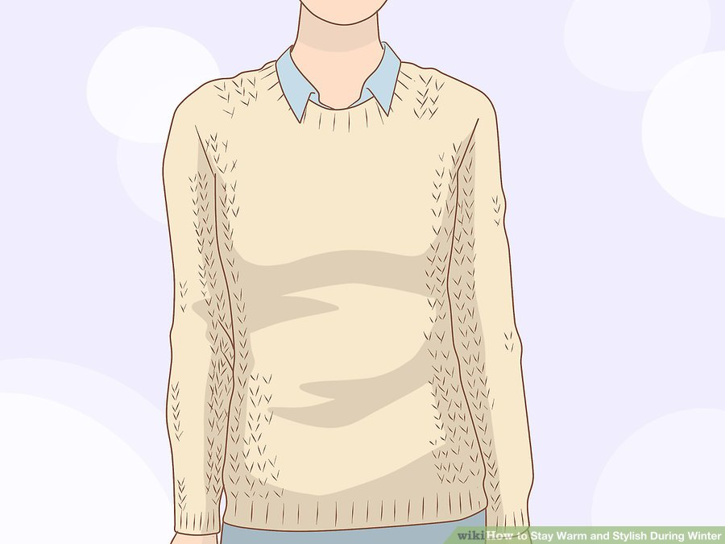
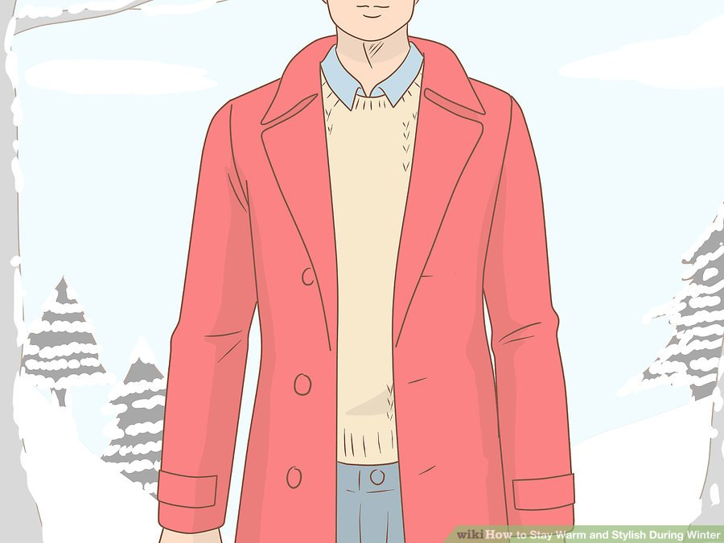
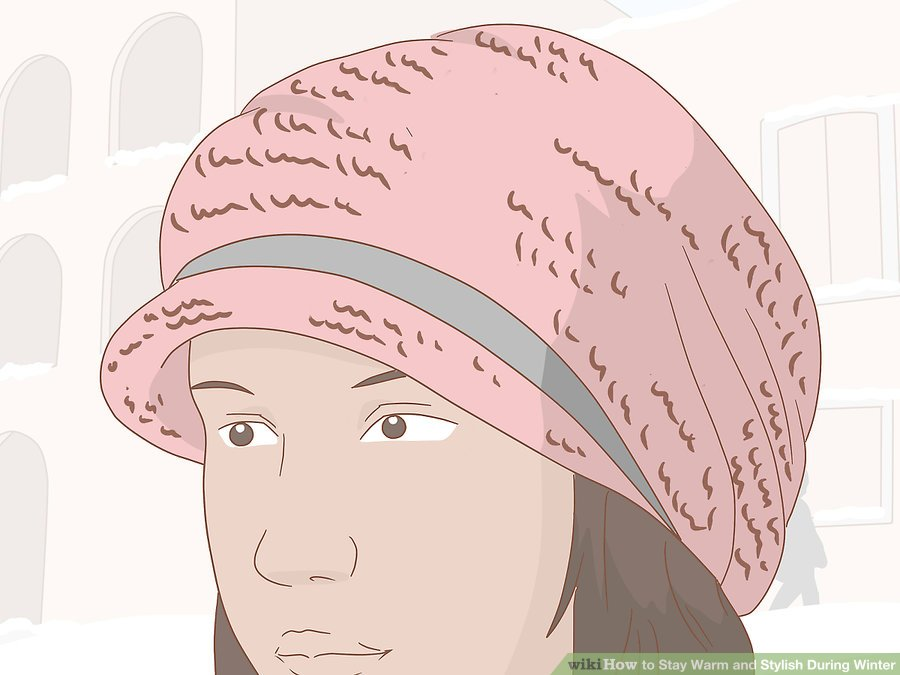
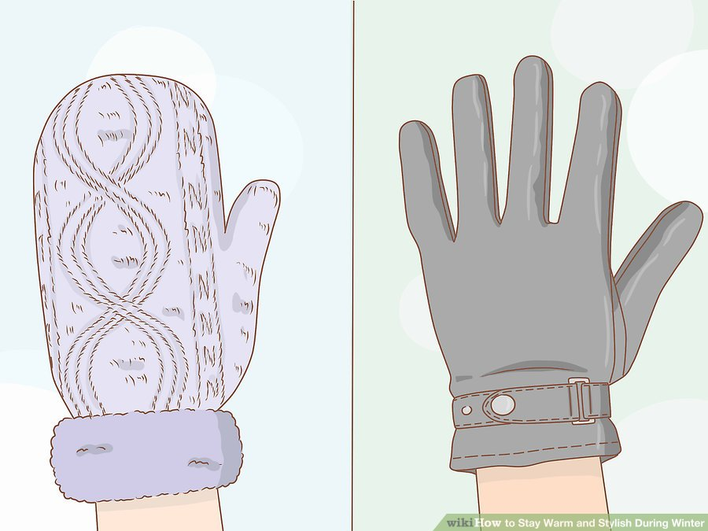
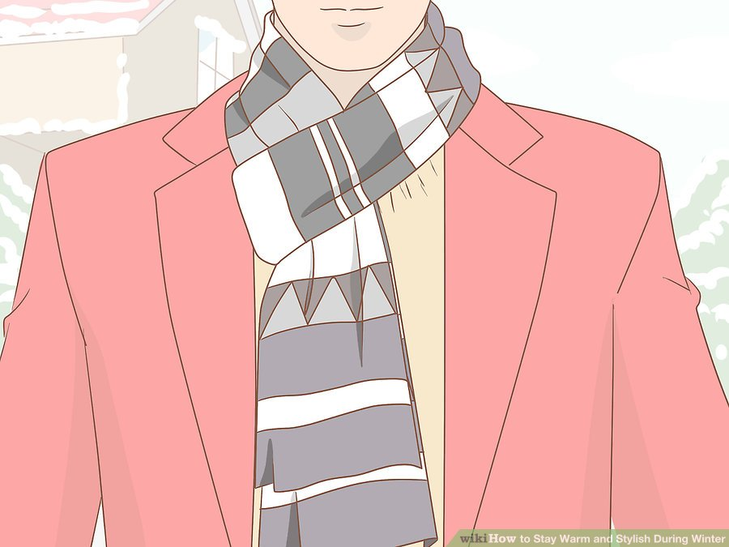
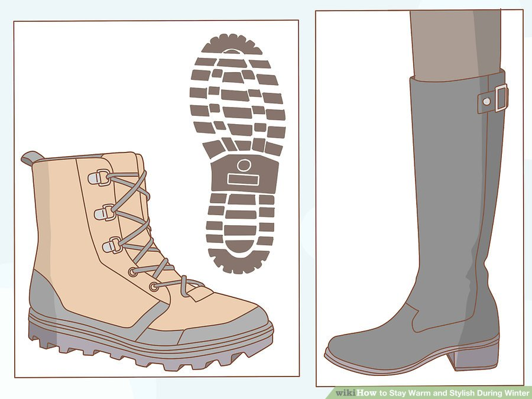

You may think it is too hard to keep looking stylish when the temperature dips during the winter months. It takes a little bit more thought and effort to remain stylish in the cold weather, but it is very possible once you get the hang of it. As long as you keep focused on practicality, you can get a lot of use out of a variety of clothing and styles. While layering your clothes is the key to keeping most of your body warm, you can add pieces to your wardrobe that will help you stand out as fashionable, while still providing extra warmth.
Part 1 of 4 Layering Your Clothes

Start with a thin layer underneath.
You'll generally want clothes that are a bit looser on your body. These layers should help wick away any sweat or other moisture on the inside, which will keep you dry and warmer. If they are tight, they can get soaked in sweat, making them heavier.
- Longjohns and thermal underwear are good investments for areas that are harder to layer, like your legs, especially if the weather is going to be very cold.Plus, since they are all the way under your clothes, no one will ever have to see what they look like. Just make sure they fit well and aren't too bulky.
- With proper layering, you can even wear a dress in winter.

Put on thin, tight clothes.
This will be the first layer that people see, so look for a nice shirt or blouse in a professional environment, or other item that you would be comfortable having people look at you in. Just remember, the thinner and better fitting your clothes, the more you can potentially layer on.
- You can also consider layering in reverse, that is putting thicker layers on first with loose thinner clothing on top. Wearing a t-shirt over a long-sleeve shirt or a skirt over pants can give some extra life to your warm-weather clothing.
- Tights are a nice thin layer to wear closer to your skin, and they can generally fit under anything. They can also give extra life to clothes you might not be able to wear otherwise, like ripped jeans.

Add a vest or sweater.
The main job of this layer is to help provide further insulation and trap heat. This will likely be a visible layer, so look for something that matches your shirts and other wardrobe. A wool sweater can also be a nice addition for a more professional environment.
- These layers should be made of natural fibers like goose down and wool. This includes nicer wool fabrics like cashmere and angora. These are thicker materials that provide heat while not being too heavy.
- Vests help cover and keep your torso warm, and can be a nice layer underneath a peacoat or other cold weather jacket. Because they don't have any sleeves, you'll also be able to move your arms around more easily.

Get a good winter coat.
This is the one article of clothing you'll always want to have in colder weather, no matter how many layers you wear, so it's worth making an investment. There are many different types of winter coats out there, so you'll have plenty of options to find something that suits you. Look for something thick, but also roomy enough that you'll be able to layer underneath it.
- Look for different colors. If you are looking to stand out from the crowd, don't stick with a more traditional black. Instead, find something bright and colorful, which will stand out from the drab crowd.
- You can even layer coats. Make sure that the inner jacket is slimmer and tighter fitting to prevent bulk. The outer coat should be larger and roomier, to account for the extra layers underneath.
Part 1 of 4 Making Your Look Stylish

- Wear a hat.
You lose a good deal of heat out of your head. Plus, it is also a sensitive part of the body, so you will really feel it when the temperature dips. Make sure you have something to keep your head warm and protect from the wind.
- One good piece of headgear for style is a beanie. It covers your ears and the top of your head, while also keeping your face open for people to see. It's hard to feel stylish when no one can see your face.

- Keep your hands warm.
You don't want to keep your hands stuffed into your pockets at the only way to keep warm. Instead, keep them out by covering them with gloves or mittens. Either one can work, but are better for different situations. Mittens will keep your hands warmer because they hold your fingers together in a single pouch. On the other hand, gloves give you more freedom to move and use your fingers.
- Whichever you chose, you can always give your hands an extra boost with small hand warmers.
- Like other outer layers, waterproof mittens or gloves are best, especially if you will be dealing with rain or snow. Dry hands are easier to keep warm.

- Cover up the obvious holes in your wardrobe.
Don't just think about large areas of exposed skin like your arms, legs, or neck. Consider the parts of your body where your regular layers end, like your neck and wrists. Look for clothing that is a bit longer to cover up more exposed areas.
- Wearing a scarf is a great and stylish way to keep your neck warm. A colorful or interesting pattern can help you stand out, and it doesn't need to match the rest of your wardrobe in the same way. Don't forget that there are a variety of ways to tie your scarf to vary your look, even with the same scarf.

- Get the right shoes.
Your footwear should have some kind of tread. Winter is the season for ice, snow, and slush, and there is nothing stylish about slipping as you walk along. Boots are also thicker, and will help trap heat around your feet and ankles.
- For women, consider higher boots that come further up your legs. The extra coverage will give you the freedom to consider a shorter skirt, and provide a slightly different look than rain or snow boots.
- If you won't be trudging through snow, you could still wear flats in winter as long as they have a good bottom grip. You should also protect your legs by pairing them with tights, tall socks, or jeans.